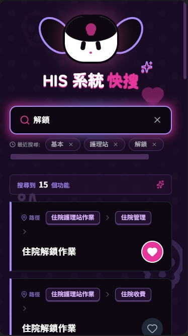

半小時創造業務價值：HIS 搜尋工具的 AI 革命
一個真實案例，展示如何用 Google AI Studio 快速解決第一線員工痛點，實現高 ROI 的敏捷創新。
痛點：迷失在數位迷宮的隱形成本
在任何一家導入 HIS 系統的醫療院所，都存在一個隱形成本：員工每天花費大量時間在複雜的選單中「找路」。這不僅讓新進人員挫折，也拖慢了資深員工的效率。
時間浪費
員工在數百個功能中大海撈針，每天累積的無效工時，直接侵蝕了生產力。
高挫折感
新進人員難以上手，資深員工也因找不到功能而感到沮喪，影響團隊士氣。
創新的瓶頸
即使有好的改善想法，也常因「找工程師要等」的開發瓶頸而被擱置。
解決方案：用 AI Studio 將想法變為現實
與其等待漫長的開發排程，我們選擇了另一條路：利用 Google AI Studio，將一份整理好的 HIS 選單 JSON 檔，直接交給 AI，並下達簡單的指令，在 30 分鐘內生成一個功能齊全的搜尋應用。
此工具提供了四大核心功能，徹底改變了使用者與 HIS 系統的互動方式。
影響：創造可量化的商業價值
此系統不僅是效率工具，更是企業的策略性資產，帶來了實質的商業效益。
開發效率
90%↑
將傳統模式下需耗時數週的開發流程，縮短至 30 分鐘，實現了指數級的效率提升。
我自己滿意度
100%
提供直觀、易用的搜尋體驗，解決了長久以來的痛點，獲得自己的廣泛好評。
創新文化
0成本
證明了非工程師也能利用 AI 工具解決身邊的問題，鼓勵了由下而上的創新文化。
我的角色與貢獻
- 問題定義: 準確捕捉一線人員在 HIS 操作上的核心痛點，並將其轉化為一個可被 AI 解決的具體問題。
- 快速原型製作: 利用 Google AI Studio，在極短時間內將想法轉化為一個可互動、可驗證的應用原型。
- 使用者體驗導向: 不僅解決功能問題，更透過 AI 生成的風格化介面（庫洛米主題），提升應用的趣味性與使用者黏性。
- 價值驗證: 證明了即便沒有程式碼開發，也能透過 AI 工具快速實現業務價值，並為更廣泛的 AI 導入提供了成功案例。
使用的技術
Google AI Studio
Generative AI
No-Code
JSON